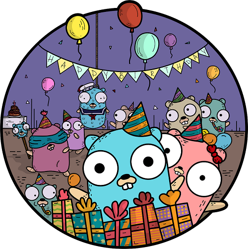
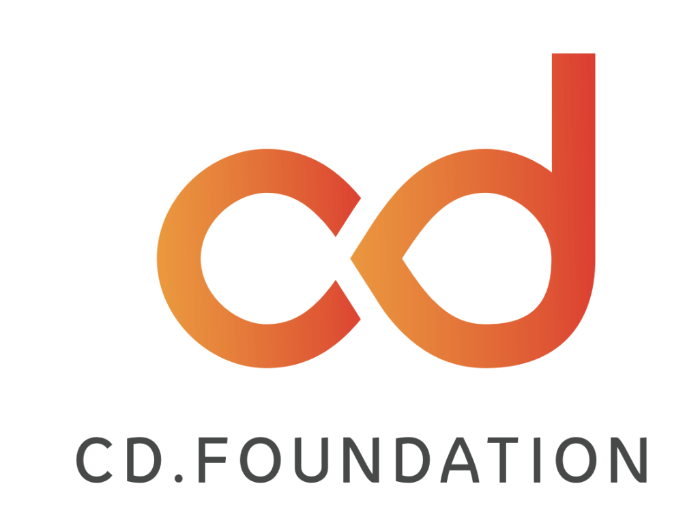
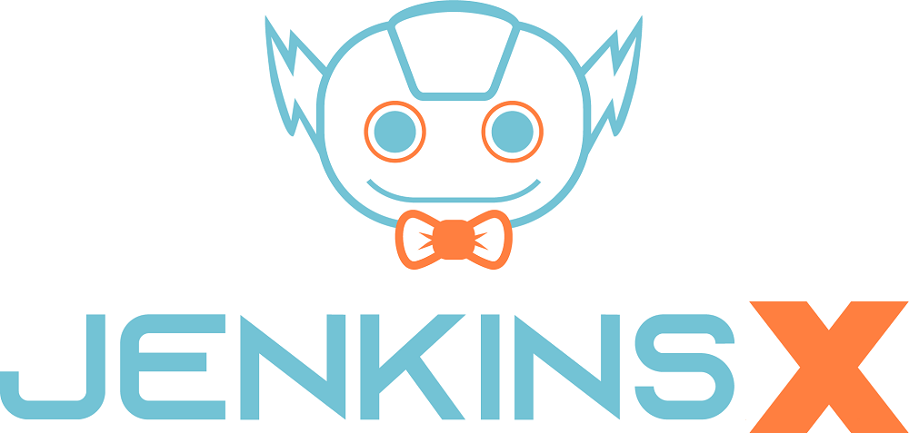
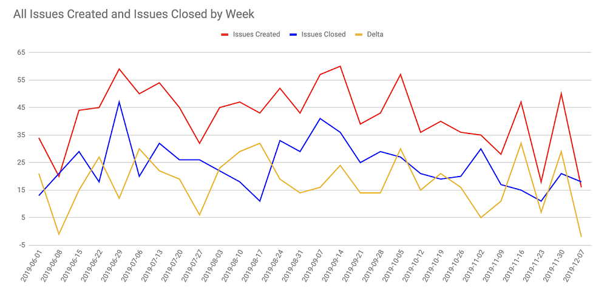
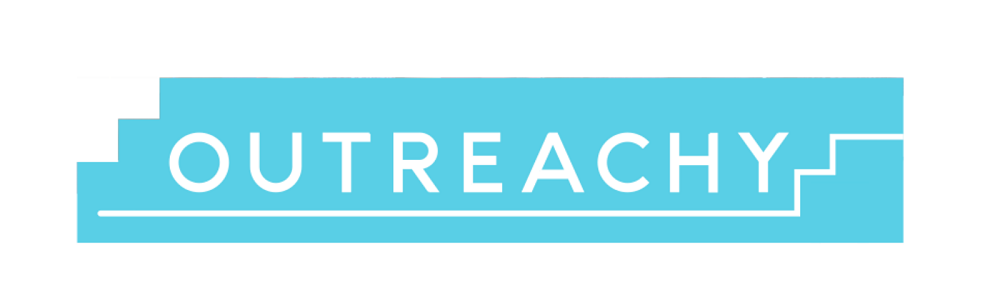

Happy Second Birthday Jenkins X!

始于 2019 年初的 Jenkins X 项目在去年的1月14号庆祝了它的第一个生日，这对任何开源项目来说都是一件大事，我们刚刚又庆祝了它的第二个生日。
Jenkins X 的两周年！
Jenkins X 已经从一个关于 CI/CD 如何在云原生世界中被重新设计的愿景，进化到了一个快速发展、创新并迅速成熟的开源项目。
Jenkins X 是为了帮助开发者们能够快速的将代码发布到 Kubernetes 上而创建的。从一开始，Jenkins X 就致力于改善开发者的开发体验。使用一个命令行工具，开发者就能构建 Kubernetes 集群，部署流水线，创建应用，新建 Github 仓库，将应用推送至 Github 仓库，新建 Pull Request，构建容器，在 Kubernetes 中运行该容器并最终合并到产品中。为了做到这些，Jenkins X 对一系列同类最佳开源工具进行了自动化安装与配置，并且自动化了所有流水线的生成。Jenkins X 还通过测试、过渡和生产环境对应用程序的升级进行了自动化改造，使开发人员能够获取大量到的变更反馈。例如，Jenkins X 的预览环境容许快速与及早的反馈，这样开发者便能在自动构建的环境中查看应用的实际功能。我们发现，由 Jenkins X 在流水线中自动创建的预览环境在开发者中十分流行，因为他们能够在将代码合并到 master 分支之前查看变更情况。
Jenkins X 本身是功能专一的，但是却极易拓展。Jenkins X 是为实现 DevOps 最佳实践而创建的，旨在跨团队的可重复、可管理的方式中，能够完成大量分布式微服务的部署工作。Jenkins X 促进了大量已被检验的最佳实践，如基于主干的开发和 GitOps。为了让您能够快速上手与使用，Jenkins X 提供了许多快速入门的例子。
属于 Jenkins X 的 2019 高光时刻
2019 年 2 月：Tekton 的崛起！
在 2018 年的后半年，Jenkins X 开始了一趟提供 Serverless Jenkins 与仅在需要时运行流水线引擎的旅程。这种流水线引擎基于 knative build-pipeline 项目，该项目进化成为了受到 Jenkins 和 Jenkins X 社区众多帮助与热爱的 Tekton 。Jenkins X 项目在 2019 的 2 月完成了与 Tekton 的初次集成。Tekton 是一个强大和灵活的 Kubernetes 原生开源框架，用于创建 CI/CD 流水线、管理制品和渐进部署。
2019 年 3 月：Jenkins X 加入了持续交付基金会！

Jenkins X 加入了 Continuous Delivery Foundation (CDF)，与 Jenkins、Spinnaker 和 Tekton 一起作为创始项目。加入一个专注于持续交付的中立供应商基金会对于 Jenkins X 社区意义重大。
2019 年 6 月：Lighthouse 项目
当 Jenkins X 开始它的 serverless jenkins 旅程时，它选择了使用 Prow，一个用于 Github 事件和 ChatOps 的事件处理器。Prow 被 Kubernetes 项目用于构建所有的仓库，除此以外，它还包含了一个强大的 webhook 事件处理器。Prow 已久经考验，但它却严重的依赖于 Github，并且难以拓展至其他的 SCM 提供商上。 在 2019 年 6 月末，一项轻量级、可拓展至 Prow 的项目开始了，它叫做 Lighthouse。Lighthouse 跟 Prow 支持同样的插件（因此你仍然可以通过 ChatOps 请求各种各样的东西）和配置 —— 这使得 Prow 和 Lighthouse 间的迁移变得极其容易。
2019 年 6 月：Jenkins X Boot！
我们在整个六月都十分的忙碌 —— 暑期到来前一个疯狂的活动爆发期。Jenkins X 用户面临的一个常见问题便是在不同的 Kubernetes 集群上安装 Jenkins X 。按照正确的顺序安装服务和确保 DNS 和 Secrets 正确性的工作是因供应商的不同而完全不同，有时也因集群的不同而不同。我们意识到，要简化安装，我们确实需要一个流水线，虽然这听起来有点像一个电影情节，但运行 Jenkins X 流水线来安装 jx 确实是最好的选择。jx boot 命令使用本地 jx 二进制文件解释引导流水线。jx boot 命令也可以用于更新你的集群。
2019 年 7 月：一个新的 Logo！

作为转移到 CDF 的一部分，Jenkins X 项目利用这个机会重新设计了它的标志。一个机器人就代表了 Jenkins X 在 Kubernetes 上提供自动化 CI/CD 的能力等等！
2019 年的后半年：聚焦于稳定性和可靠性
Jenkins X 项目与很多不同的组件和活动部件一起进展的很快。不幸的是，这一快速的发展招致了一些不稳定性和导致了严重 issue 的增长，这些问题有可能破坏我们已经在 Jenkins X 上所做的所有杰出工作。于是，社区一直在努力提高稳定性和解决显著的 issue —— 下图展示了去年 issue 数量的走势，可以看出，在最后6个月内，创造的 issue 数量有一个显著的下降趋势。

CloudBees 还通过引入 CloudBees Jenkins X 发行版帮助了这项工作，该发行版增加了围绕稳定配置和部署的测试，并且在每月定期发布。
2019 年 10 月：Jenkins X Steering Committee 成立会议
Jenkins X Bootstrap Steering Committee 的任务是组织其向选举制 Steering Committee 的过渡工作，并确定 Steering Committee 在指导 Jenkins X 项目方面将承担的责任。
2019 年 12 月：第一个 Jenkins X Outreachy 学员

Neha Gupta 正在向 Jenkins X 中添加对 Kustomize 的支持以确保 Kubernetes 本机配置管理功能的实现，同时将在 2019 年 12 月到 2020 年 3 月期间参与 Outreachy。我们欢迎 Neha 在 Jenkins X 上所做的工作，并且期待着我们能在持续培养的文化基础上再接再厉！
Jenkins X 在产品中的使用
尝试 Jenkins X 最简单的方法无疑是使用由 Jenkins X 驱动的 CloudBees CI/CD，它通过方便易用的 SaaS 提供 Jenkins X 。无需设置集群，无需安装 Jenkins X，这些它都已经为你完成了！目前，由 Jenkins X 驱动的 CloudBees CI/CD 已经可供预览。在这里注册试试新的 Jenkins X Saas 吧！
下一步？
Jenkins X 项目将鼓励社区参与到更多的创新活动中。同时，有很多不错的想法也将继续扩展的我们的故事，比如：集成渐进式交付（A/B 测试、Canary 和 Blue/Green 部署）、持续化验证以及更多的平台支持。我们也期待着在 Jenkins X 的 CloudBees UI 中能涌现出更多更棒的新特性。
敬请期待 Jenkins X 将在 2020 年带来的更多令人振奋的新公告吧！